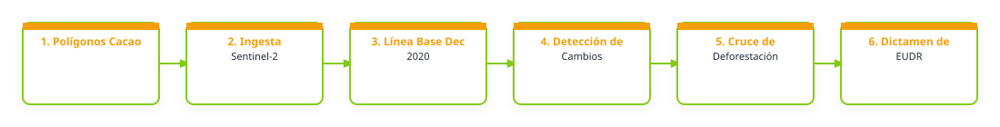

1. Problema que busca atender
ECOLASA exporta cacao proveniente de asociaciones de pequeños productores miembros de FUNDALACHUA (que es el ente que consolida todo el cacao procesado para la venta), por ello es importante cumplir con el Reglamento de la Unión Europea contra la Deforestación (EUDR), el cual exige demostrar que el grano no proviene de tierras deforestadas después del 31 de diciembre de 2020. Aunque se cuenta con el polígono de las parcelas, no se tiene una herramienta para cruzar de manera automatizada estos polígonos con los mapas de cobertura forestal e histórico de pérdida de bosque.Se requiere mejor información, integrada y visualmente clara, para que los técnicos puedan identificar alertas tempranas de riesgo y realizar un análisis de debida diligencia de forma eficiente.
2. Relevancia del problema
No contar con información oportuna y herramientas de verificación espacial generaría consecuencias como tener un alto riesgo de rechazo de los cargamentos en los puertos de la Unión Europea, además, la falta de este monitoreo impide orientar de manera estratégica los esfuerzos de gobernanza poscosecha y los incentivos de conservación hacia las zonas que muestran mayor vulnerabilidad o presión sobre el bosque.
3. Producto esperado
Tipo de entregable: Mapa; Reporte
Descripción del producto: Poder cargar los polígonos de las parcelas de cacao y obtener automáticamente dos resultados:1. Un mapa donde se visualicen los polígonos de las parcelas sobrepuestos con las capas de cobertura forestal de Copernicus a diciembre de 2020. 2. Un reporte descargable en PDF que actúe como constancia de debida diligencia para cada productor. Este reporte debe incluir los datos básicos de la finca, las coordenadas/área analizada, el gráfico del análisis espacial y una conclusión automatizada y clara que indique si se detectó o no deforestación bajo el criterio de la norma EUDR.
Componentes de despliegue sugeridos: Google Earth Engine App; Visor web; Base de datos; Formularios de campo; GeoServer u otro servidor geoespacial
Nivel de acceso previsto: mixto
Forma de uso institucional: Los técnicos de la organización de productores ingresarían a la plataforma para cargar los polígonos de las parcelas y consultar el mapa. Desde allí, descargarían el reporte analítico automatizado en PDF para adjuntarlo como constancia física y legal en los expedientes de exportación.También se utilizaría para fines comerciales para definir qué lotes de cacao están listos y aprobados para la venta, y cuáles requieren atención prioritaria.En caso de que el sistema arroje una alerta de riesgo, los técnicos llevarán el mapa al territorio para verificar directamente con los productores si se trata de un falso positivo o si requiere un plan de mitigación forestal.La base de datos de las parcelas sería actualizada periódicamente por la unidad técnica de la organización a medida que se incorporen nuevos productores a la cadena de valor.
Requiere actualización: si
Frecuencia / Método de actualización: con visitas y consultas de los poligonos de manera anual por parte de los técnicos, esto se hace para la aplicación e inspeccion interna y externa para la Certificación orgánica.
4. Flujo de trabajo preliminar
El siguiente diagrama conceptualiza el procesamiento de datos y flujo técnico sugerido para la solución:

Descripción del flujo metodológico imaginado:
1. Ingresar y preparar datos (polígonos, base de datos de productores)2. Cargar en la plataforma los polígonos georreferenciados de las parcelas de cacao 3. Definir la línea base (Diciembre 2020)4. Consultar e integrar las capas de cobertura forestal y uso de suelo de Copernicus para establecer el estado del bosque a la fecha establecida5. Procesar y detectar cambios6. Realizar un cruce espacial automatizado (análisis de superposición) entre el polígono de la parcela y las alertas de pérdida de cobertura arbórea o cambios de uso de suelo ocurridos entre 2021 y la fecha actual.7. Clasificar y validar el riesgo 8. Evaluar el porcentaje de coincidencia o afectación dentro del polígono9. Asignar una categoría de riesgo según el cumplimiento de la norma EUDR 10. Visualización y salida de resultados11. Publicación del resultado en el visor geográfico interactivo12. Generar de manera automatizada del reporte analítico en PDF con el dictamen de debida diligencia listo para descargar.
Algoritmos o índices clave: 1. Herramientas de escritorio y nube: QGIS (para la visualización de control y preparación de capas locales) y Google Earth Engine o la plataforma Copernicus 2. Métodos de clasificación supervisada o semiautomatizada para delimitar las coberturas de bosque, y algoritmos de detección de cambios basados en la comparación de fechas.3. Índices de vegetación para monitorear el estado y densidad de la cobertura de bosque que puedan indicar degradación o tala.4. Captura de datos para la recopilación o validación de polígonos y datos atípicos directamente en campo.
5. Datos e insumos identificados
Insumos satelitales y capas locales necesarias para el despliegue del prototipo:
| Insumo / Variable | Detalle en la Ficha |
|---|---|
| Datos Satelitales / Fuentes Copernicus | Sentinel-2 / óptico; Copernicus Land Monitoring Service; No estoy seguro/a |
| Datos Locales Disponibles | Se trabajará con dos áreas: 1. Eco región Lachua, Cobán, Alta Verapaz (con colindancia con el Parque Nacional Lachuá, que es área protegida)2. Aldea Aguapaque, San Luis, Petén (es parte de Selva Maya) |
| Datos Requeridos / Faltantes | 1. Identificar cuáles son los productos o mapas específicos del Copernicus o del ecosistema de satélites Sentinel que tengan la resolución y precisión adecuada para el territorio (Lachuá y Petén) con fecha de corte a diciembre de 2020.2. Orientación sobre qué algoritmos o flujos de análisis espacial ya validados dentro del marco AFOLU se recomiendan para procesar y automatizar el cruce de información (polígono de la finca vs. mapa de cobertura forestal) para asegurar que el dictamen sea confiable y evitar falsos positivos. |
| Documento Relacionado | No indicado en la ficha |
| Enlaces Externos / Observaciones | Enlace externo |